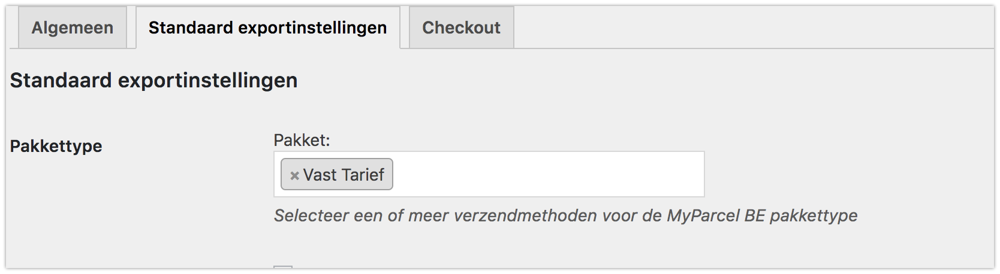
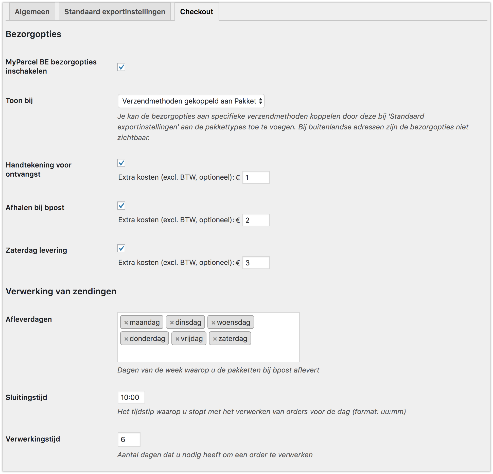
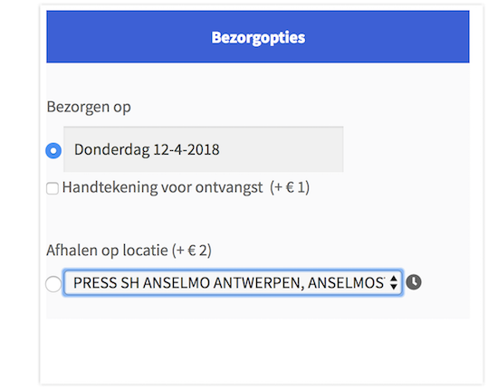
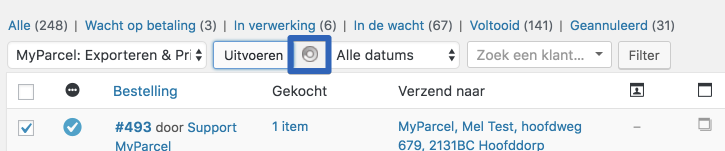
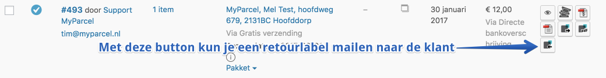
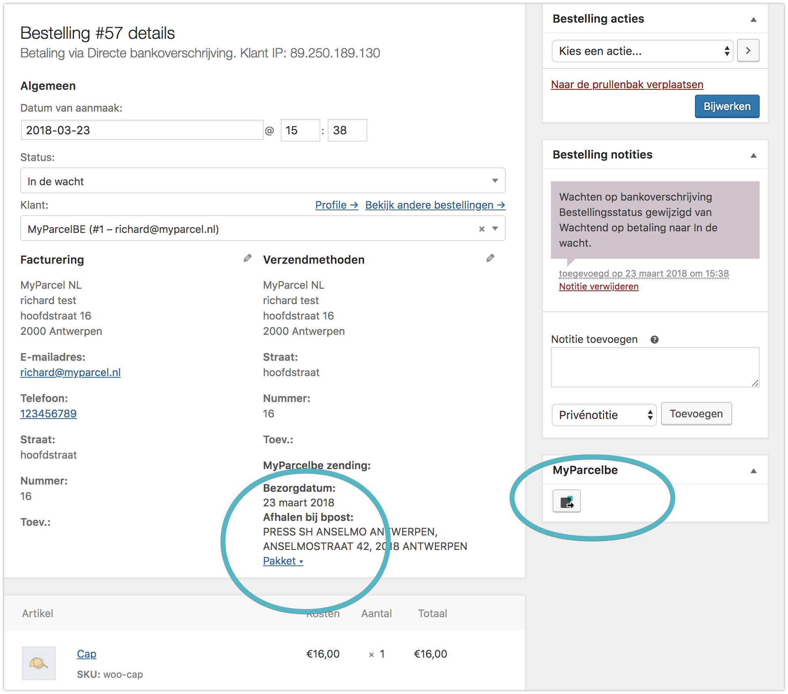

Inleiding
Deze handleiding beschrijft de functionaliteiten van de MyParcel België plugin en hoe je de MyParcel België plugin in jouw webwinkel kunt installeren. Wij adviseren om de plugin eerst in een testomgeving te installeren voordat je deze in jouw live webshop zet. De installatie kan op twee manieren worden uitgevoerd:
- Via de WordPress plugin directory
- Handmatig uploaden
Inhoud
1 Installatie
Wij adviseren de installatie altijd eerst op een testomgeving uit te voeren en een back-up te maken van jouw webshop voor je begint.
1.1 Via de WordPress plugin directory
Om de MyParcel plugin te installeren via de WordPress plugin directory volg je de volgende stappen:
- Ga in WordPress naar het menu Plugins > Nieuwe plugin.
- Typ in MyParcel en klik op zoeken.
- Kies de plugin WC MyParcel Belgium en klik op Nu installeren. De plugin wordt nu gedownload.
- Wanneer het downloaden voltooid is, klik je op Plugin activeren.
1.2 Handmatig uploaden
- Download de zip file van de plugin vanaf de WordPress site: https://nl.wordpress.org/plugins/wc-myparcel-belgium/
- Ga in WordPress naar het menu Plugins > Nieuwe plugin.
- Klik bovenin het scherm op Uploaden.
- Kies het bestand en klik op Nu Installeren.
- Wanneer het installeren voltooid is, klikt u op ‘Plugin activeren’.
1.3 Testen
Met de plugin van MyParcel België worden bepaalde bezorgopties toegevoegd aan jouw checkout. Welke bezorgopties je jouw klant aan wil bieden kun je instellen in de configuratie van de MyParcel plug-in.
Wij adviseren dan ook om na het installeren van de plugin jouw bestelproces goed door te lopen of alles naar wens is. Met de checkout is het namelijk mogelijk om bijvoorbeeld uitgestelde levering in te stellen, het is dan fijn voor jou om te zien wat jouw klanten ook zullen zien.
Ook omdat niet alle checkouts in Woocommerce hetzelfde werken is het nogmaals goed om te kijken of alles naar wens staat. Staat alles op de juiste plaats en is het goed uitgelijnd? Onze tip is om hier naar te kijken voordat jouw klanten dit gebruiken.
2 Configuratie
Ga naar het menu WooCommerce → MyParcel BE om de MyParcel plugin te
configureren.
2.1 Algemeen
2.1.1 API instellingen
Om verbinding te kunnen maken met jouw MyParcel account is het noodzakelijk om hier jouw API-key in te vullen.Als je ingelogd bent in jouw MyParcel account op backoffice.sendmyparcel.be dan kun je deze vinden in menu Instellingen → Algemeen.
2.1.2 Label weergave
Geef hier aan of je het label direct wilt downloaden of wilt openen in een nieuw scherm.
2.1.3 Track&Trace instellingen
Stel ’Email track&trace code’ in zodat het emailadres van de klant wordt meegestuurd naar MyParcel BE. Het emailadres kan door MyParcel BE worden gebruikt om de Track&Trace mail te versturen naar de klant.
2.1.4 Diagnostische hulpmiddelen
Je kunt de diagnostische hulpmiddelen inschakelen op het moment dat er problemen zijn met het exporteren van de zendingen. In dit bestand wordt de communicatie tussen WooCommerce en MyParcel beschreven.

2.2 Standaard exportinstellingen
2.2.1 Pakkettype koppelen aan verzendtype
Je kunt verzendmethoden koppelen aan een pakkettype, zodat het juiste label wordt aangemaakt in jouw MyParcel account. Met onderstaand voorbeeld lichten we dit verder toe.

In het voorbeeld is te zien dat de verzendmethode Vast tarief is gekoppeld aan het pakkettype Pakket
2.2.2 Koppel emailadres klant
Je kunt de keuze maken om wel of niet het e-mailadres vanuit jouw orders mee te sturen naar MyParcel BE. Wanneer je het emailadres van de klant koppelt, kan je instellen dat MyParcel BE jouw Track&Trace emails verstuurd naar dit adres. In jouw MyParcel BE backend kun je zelf deze email in of uitschakelen en opmaken in jouw eigen stijl.
2.2.3 Label omschrijving
Met deze optie kun je een beschrijving toevoegen aan de zending. Dit zal worden afgedrukt op de linkerbovenhoek van het label en kun je gebruiken om de zending in het MyParcel BE zendingenoverzicht op te zoeken. Gebruik [ORDER_NR] om het ordernummer te vermelden.
2.2.4 Leeg pakket gewicht
Geef hier aan wat het gewicht van een leeg pakket is, afgerond op gram.
2.3 Checkout
Via het tabblad ‘Checkout’ heb je de mogelijkheid om meer verzendopties toe te voegen in jouw checkout. Ook is het mogelijk om ervoor te kiezen de checkout niet enkel bij pakketten te tonen maar ook voor alle verzendmethoden.
2.3.1 Bezorgopties
Bij de verschillende bezorgopties is het mogelijk een toeslag in te stellen die voor de desbetreffende bezorgoptie doorberekend wordt aan jouw klant via de checkout.
Het is dus een toeslag op de standaardtarieven die je al hebt ingevoerd. In onderstaand voorbeeld zie je hoe deze toeslagen in de check-out terugkomen.

Je ziet bij de checkout instellingen nog 3 andere instellingen. Dit zijn afleverdagen, sluitingstijd en verwerkingstijd. Op basis van deze instelling worden de juiste levertijden en –dagen getoond aan jouw klanten via de checkout, gebaseerd op jouw manier van orderverwerking.
2.3.2 Verwerking van zendingen
Afleverdagen
Hiermee kun je aangeven op welke dagen jij het pakket afgeeft bij een Bpost locatie. Jouw klanten krijgen hiermee de juiste beschikbare bezorgdagen aangeboden.
Sluitingstijd
Met de sluitingstijd kun je aangeven tot welk moment van de dag de orders nog verwerkt kunnen worden. Als je elke dag rond 17:00 de bestellingen naar een Bpost locatie brengt is het handig om de laatste order rond 16:00 te verwerken. Wanneer jouw klanten na dit tijdstip een bestelling plaatsen zien zij een latere levermogelijkheid. Bijvoorbeeld:
Sluitingstijd is om 16:00 en je kunt dezelfde dag de orders verwerken en op tijd inleveren. Dan zal jouw klant als eerste levermogelijkheid voor 16:00 de volgende dag zien. Wanneer jouw klant na 16:00 besteld zal het de dag erna zijn.
Verwerkingstijd
Je kunt hier instellen hoeveel dagen jij nodig hebt om een order, die vóór jouw laatste besteltijd binnenkomt, te verwerken. Als je bijvoorbeeld 1 dag invult, zal er in de weergave in de check-out altijd rekening gehouden worden met het feit dat jij de pakketten dus niet morgen geleverd worden. Bijvoorbeeld:
De bestelling wordt geplaatst op 16 september voordat jij naar het Bpost punt gaat. Je hebt echter een verwerkingstijd van 1 dag ingesteld, dus de eerste mogelijkheid voor jou om het pakket in te leveren is dan 17 september. Jouw klant krijgt dan dus pas 18 september als eerst mogelijke leverdag te zien.
3 Orderoverzicht
In het orderoverzicht kun je eenvoudig zien wat voor zending de nieuwe bestelling betreft. Ook kun je makkelijk het pakkettype wijzigen indien dit gewenst is. Wanneer je op Pakket klikt verschijnt het venster eronder. Hierin is het mogelijk om verzendopties uit te schakelen of juist toe te voegen of het soort zending aan te passen.
Na het kiezen van jouw gewenste opties of het wijzigen van het Soort zending klik je op Opslaan en daarna kun je deze keuze exporteren naar MyParcel BE en het gewenste label aanmaken.

Je kunt op 2 manieren jouw orders doorzetten naar MyParcel BE en hier vervolgens een label voor uitprinten. Namelijk door een order (of meerdere orders) te selecteren en vervolgens naar Acties te gaan. Daar kun je jouw keuze maken Exporteren, Printen of Exporteren en Printen.


3.1 Retourlabel email
Vanuit het orderoverzicht kun je een retourlink naar jouw klant sturen. Jouw klant ontvangt een e-mail met een link er in om eenvoudig een retourlabel te printen. In onderstaande afbeelding kun je zien welk icoontje hiervoor gebruikt kan worden.
4 Orderdetails
Uiteraard is het ook mogelijk om zendingen vanuit de order detailpagina zendingen aan te maken. Door op een order te klikken kom je op een pagina waar meer details over deze bestelling te vinden is.
